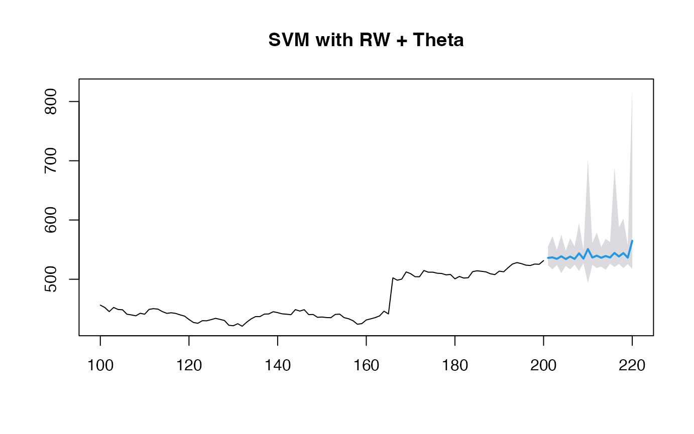
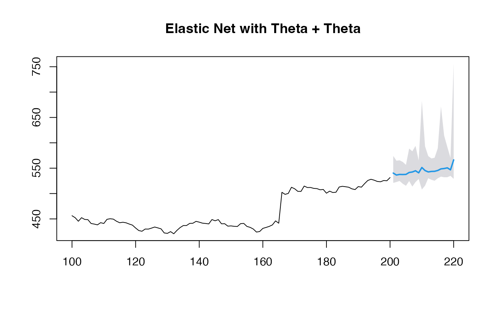

Beyond GARCH
mlarch.RmdIntroduction
Probabilistic stock forecasting often relies on parametric models
like ARIMA for the mean and GARCH for volatility. The
mlarchf function in the ahead package offers a
flexible hybrid alternative to ARMA-GARCH by combining machine learning
approaches with ARCH effects.
The model decomposes the time series into two components:
- Mean component:
- Volatility component:
where:
- is the conditional mean (modeled using any forecasting method)
- is the conditional volatility (modeled using machine learning)
- are standardized residuals
The key innovation is using machine learning methods
and conformal prediction to model the volatility component, allowing for
more flexible and potentially more accurate volatility forecasts than
traditional GARCH models. The function supports various machine learning
methods through parameters fit_func and
predict_func as in other ahead models, and
through the caret package.
The forecasting process involves:
- Fitting a mean model (default:
auto.arima) - Modeling the squared residuals using machine learning. For this to work, the residuals from the mean model need to be centered, so that
(basically a supervised regression of squared residuals on their lags) is a good approximation of the latent conditional volatility
- Conformalizing the standardized residuals for prediction intervals
This new approach combines the interpretability of traditional time series models with the flexibility of machine learning, while maintaining proper uncertainty quantification through conformal prediction.
Basic Usage
Let’s start with a simple example using the Google stock price data
from the fpp2 package:
y <- fpp2::goog200
# Default model for volatility (Ridge regression for volatility)
(obj_ridge <- ahead::mlarchf(y, h=20L, B=500L))## Point Forecast Lo 95 Hi 95
## 201 533.2700 520.7125 543.3058
## 202 533.6319 521.2189 543.0401
## 203 532.6796 521.5025 543.0341
## 204 535.4829 521.9276 545.8766
## 205 536.1225 526.0746 545.8690
## 206 536.3693 524.7950 546.4976
## 207 536.7633 521.5747 547.6252
## 208 537.8977 526.5788 547.6662
## 209 538.6541 528.0581 549.0655
## 210 538.5826 524.3332 548.6398
## 211 539.8161 523.2090 550.2788
## 212 540.5613 526.9394 551.0448
## 213 540.9971 528.4168 550.9190
## 214 541.6375 529.5304 552.9026
## 215 542.6626 529.0126 552.2940
## 216 543.8149 532.4300 553.5500
## 217 544.4363 533.8023 555.1394
## 218 545.2461 535.2998 553.7284
## 219 545.5233 524.7739 555.6506
## 220 545.7712 531.2459 556.2677Different Machine Learning Methods
The package supports various machine learning methods for volatility modeling. Here are some examples:
# Random Forest
(obj_rf <- ahead::mlarchf(y, fit_func = randomForest::randomForest,
predict_func = predict, h=20L, B=500L))## Point Forecast Lo 95 Hi 95
## 201 532.6061 528.9707 536.9722
## 202 533.1003 528.7551 539.1816
## 203 532.2246 531.2974 539.2195
## 204 534.7124 528.4335 541.8784
## 205 535.7345 533.5332 541.9456
## 206 535.8594 531.3660 542.7578
## 207 536.6638 532.5376 543.9806
## 208 537.3235 533.6996 543.0118
## 209 538.1361 532.6401 546.1345
## 210 538.6090 534.8959 544.3756
## 211 539.5475 536.6442 545.9770
## 212 540.3242 536.4448 547.3574
## 213 540.4916 539.7190 545.4608
## 214 541.6104 538.1965 549.4460
## 215 542.3460 539.9363 548.2192
## 216 543.0583 539.4250 549.2510
## 217 543.8291 540.4532 551.2063
## 218 544.7318 544.0193 549.4296
## 219 545.4385 543.4554 551.7683
## 220 545.6369 541.7410 552.4946
# Support Vector Machine
(obj_svm <- ahead::mlarchf(y, fit_func = e1071::svm,
predict_func = predict, h=20L, B=500L))## Point Forecast Lo 95 Hi 95
## 201 532.7555 521.0435 543.9154
## 202 533.3039 522.8313 544.0475
## 203 531.7961 526.7143 544.6855
## 204 535.4202 523.8127 547.7359
## 205 536.2453 529.1980 546.9022
## 206 536.0528 525.3264 548.0969
## 207 536.8070 528.3163 548.2657
## 208 537.8018 529.2403 549.4555
## 209 538.4411 529.1502 550.9336
## 210 538.5585 529.7350 548.8733
## 211 539.6687 529.9950 552.0458
## 212 540.7532 531.5196 552.6502
## 213 540.7381 534.7887 551.0466
## 214 541.5121 530.3333 555.5088
## 215 542.7027 531.9594 553.9451
## 216 543.6152 535.4353 553.9793
## 217 544.5081 535.6020 557.3502
## 218 544.9934 536.4035 554.6856
## 219 545.9369 536.7190 557.2555
## 220 545.6838 535.4850 558.2409
# Elastic Net
(obj_glmnet <- ahead::mlarchf(y, fit_func = glmnet::cv.glmnet,
predict_func = predict, h=20L, B=500L))## Point Forecast Lo 95 Hi 95
## 201 533.2700 520.7125 543.3058
## 202 533.6319 521.2189 543.0401
## 203 532.6796 521.5025 543.0341
## 204 535.4829 521.9276 545.8766
## 205 536.1225 526.0746 545.8690
## 206 536.3693 524.7950 546.4976
## 207 536.7633 521.5747 547.6252
## 208 537.8977 526.5788 547.6662
## 209 538.6541 528.0581 549.0655
## 210 538.5826 524.3332 548.6398
## 211 539.8161 523.2090 550.2788
## 212 540.5613 526.9394 551.0448
## 213 540.9971 528.4168 550.9190
## 214 541.6375 529.5304 552.9026
## 215 542.6626 529.0126 552.2940
## 216 543.8149 532.4300 553.5500
## 217 544.4363 533.8023 555.1394
## 218 545.2461 535.2998 553.7284
## 219 545.5233 524.7739 555.6506
## 220 545.7712 531.2459 556.2677Let’s visualize the forecasts:

par(mfrow=c(1, 2))
plot(obj_svm, main="Support Vector Machine")
plot(obj_glmnet, main="Elastic Net")
Using caret Models
The package also supports models from the caret package,
which provides access to hundreds of machine learning methods. Here’s
how to use them:
y <- window(fpp2::goog200, start=100)
# Random Forest via caret
(obj_rf <- ahead::mlarchf(y, ml_method="ranger", h=20L))## Point Forecast Lo 95 Hi 95
## 201 531.3001 530.3815 535.0797
## 202 532.7425 531.4783 541.3865
## 203 532.9632 531.4783 536.2046
## 204 531.9734 531.4783 537.7526
## 205 531.3398 530.1817 534.6033
## 206 533.4750 526.7619 545.8506
## 207 533.3075 531.4783 546.5052
## 208 557.9558 473.4424 612.6599
## 209 532.2299 531.4783 533.9453
## 210 554.4276 479.0571 606.9448
## 211 532.4029 531.4783 539.9838
## 212 559.4561 480.2828 608.4878
## 213 533.0359 531.4783 547.6419
## 214 558.4976 481.3574 609.7551
## 215 532.5064 531.4783 535.8566
## 216 563.6338 502.8062 610.7042
## 217 533.1864 531.4783 540.9575
## 218 562.3934 483.6479 611.5176
## 219 533.6487 531.4783 540.1434
## 220 563.8270 484.8392 612.4601
# Gradient Boosting via caret
(obj_glmboost <- ahead::mlarchf(y, ml_method="glmboost", h=20L))## Point Forecast Lo 95 Hi 95
## 201 533.5141 521.8769 544.3329
## 202 535.6672 527.0432 548.6365
## 203 535.6145 526.9136 545.9855
## 204 534.7122 525.8945 548.2630
## 205 533.9869 522.6654 545.4798
## 206 535.2817 525.9101 548.9111
## 207 535.7594 526.4885 553.7258
## 208 535.6123 526.4075 546.7675
## 209 534.8989 526.2783 546.5748
## 210 534.5971 524.3509 546.0680
## 211 535.3411 527.3587 548.5156
## 212 536.4773 526.2785 567.8710
## 213 536.1518 526.7067 562.0948
## 214 536.1880 525.1091 561.4326
## 215 535.6512 526.9736 545.8258
## 216 536.8984 527.6312 551.0697
## 217 536.7244 529.2853 549.1911
## 218 535.8668 525.9260 549.9064
## 219 536.9397 525.9946 549.7607
## 220 536.1102 526.3472 548.8727Visualizing the forecasts:
par(mfrow=c(1, 2))
plot(obj_rf, main="Random Forest (caret)")
plot(obj_glmboost, main="Gradient Boosting (caret)")
Looking at the simulation paths:
par(mfrow=c(1, 2))
matplot(obj_rf$sims, type='l', main="RF Simulation Paths")
matplot(obj_glmboost$sims, type='l', main="GBM Simulation Paths")
Customizing Mean and Residual Models
You can also customize both the mean forecasting model and the model for forecasting standardized residuals:
# Using RW + Theta method for mean and residuals along with SVM for volatility
(obj_svm <- ahead::mlarchf(y, fit_func = e1071::svm,
predict_func = predict, h=20L,
mean_model=forecast::rwf,
model_residuals=forecast::thetaf))## Point Forecast Lo 95 Hi 95
## 201 531.8340 523.8251 545.4631
## 202 534.3448 531.4783 550.0879
## 203 534.4511 531.4783 547.2808
## 204 532.9561 528.7915 549.6344
## 205 531.7278 525.0309 542.8341
## 206 533.2221 526.4892 551.1808
## 207 534.8013 531.4783 563.1908
## 208 534.3781 530.8451 550.2954
## 209 532.9981 531.4783 543.0524
## 210 533.1507 525.8080 548.1471
## 211 533.7038 531.2925 551.1242
## 212 534.9387 531.4783 584.5719
## 213 534.7751 530.3424 569.5082
## 214 534.8647 526.9307 568.2049
## 215 533.6290 531.4783 545.8408
## 216 534.7670 530.9297 553.8656
## 217 535.1972 531.4783 552.0696
## 218 533.8084 531.4783 553.2320
## 219 535.4485 528.0107 553.6618
## 220 533.9270 531.4783 551.3710
# Using Theta + Theta method for mean and residuals along with GLMNET for volatility
(obj_glmnet <- ahead::mlarchf(y, fit_func = glmnet::cv.glmnet,
predict_func = predict, h=20L,
mean_model=forecast::thetaf,
model_residuals=forecast::thetaf))## Point Forecast Lo 95 Hi 95
## 201 533.5786 522.8381 545.1027
## 202 536.2002 527.4412 548.9331
## 203 536.9145 528.4714 547.2302
## 204 536.5011 528.0747 550.3803
## 205 536.1956 525.8778 548.1924
## 206 537.9965 528.7658 551.4630
## 207 539.0771 529.5552 558.9502
## 208 539.3756 529.9211 551.4379
## 209 539.0507 530.2561 551.0285
## 210 539.2978 529.9360 551.1353
## 211 540.6301 532.7654 555.0398
## 212 542.1460 531.6163 575.0902
## 213 542.4751 532.4203 568.5553
## 214 542.9017 531.9548 568.3273
## 215 542.7930 534.6058 553.7479
## 216 544.6499 535.7524 558.5393
## 217 544.9135 537.2196 557.7038
## 218 544.5988 535.1256 559.1490
## 219 546.1549 535.2129 560.3674
## 220 545.7312 536.6801 558.3306
plot(obj_svm, main="SVM with RW + Theta")
plot(obj_glmnet, main="Elastic Net with Theta + Theta")
When using non-ARIMA models for the mean forecast, it’s important to check if the residuals of the mean forecasting model are centered and stationary:
# Diagnostic tests for residuals
print(obj_svm$resids_t_test)##
## One Sample t-test
##
## data: resids
## t = 1.0148, df = 99, p-value = 0.3127
## alternative hypothesis: true mean is not equal to 0
## 95 percent confidence interval:
## -0.7180739 2.2214961
## sample estimates:
## mean of x
## 0.7517111
print(obj_svm$resids_kpss_test)##
## KPSS Test for Level Stationarity
##
## data: resids
## KPSS Level = -5.6618e-230, Truncation lag parameter = 4, p-value = 0.1
print(obj_glmnet$resids_t_test)##
## One Sample t-test
##
## data: resids
## t = 1.0992, df = 100, p-value = 0.2743
## alternative hypothesis: true mean is not equal to 0
## 95 percent confidence interval:
## -0.6460748 2.2513707
## sample estimates:
## mean of x
## 0.8026479
print(obj_glmnet$resids_kpss_test)##
## KPSS Test for Level Stationarity
##
## data: resids
## KPSS Level = 0.26089, Truncation lag parameter = 4, p-value = 0.1